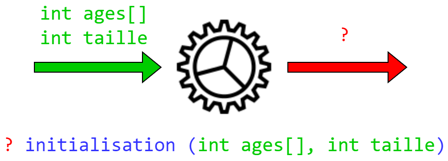

class: center, middle # Programmation procédurale : # fonctions et tableaux <img height="200px" src="img/logo.png"> --- ## On parle de quoi ? 1. <a href="UAA11-ch6.html#3">Passage par copie (rappel)</a> 2. <a href="UAA11-ch6.html#5">Passage par référence</a> 3. <a href="UAA11-ch6.html#8">Tableau en entrée</a> 4. <a href="UAA11-ch6.html#13">Tableau en sortie</a> 5. <a href="UAA11-ch6.html#16">En résumé...</a> --- ## Passage par copie (rappel) En C, le passage d'une variable contenant un type primitif en argument d'une fonction se fait **toujours par copie**. → <span style="color:red">lors de l'appel de la fonction, une copie des arguments est passé à la fonction</span> --- ## Passage par copie (rappel) ```c void ajouteDix(int n); void main (void){ int monEntier = 10; ajouteDix(monEntier); printf("%d", monEntier); // monEntier = 10 } void ajouteDix(int n){ n = n + 10; } ``` <img width="500px" src="img/copie_passage.png"> --- ## Passage par référence Un tableau passé en argument d'une fonction est toujours passé par **référence**. La référence (l'adresse) d'un tableau correspond toujours à l'adresse du premier élément du tableau. --- ## Passage par référence ```c void main(void){ int mesEntiers[] = {19,17,18}; imprimePremier(mesEntiers); } void imprimePremier(int tab[]){ printf("%d\n", tab[0]); } ``` --- ## Passage par référence ```c void testRef(int tab[]); void main(void){ int tab[] = {19,17,18}; printf("La première case se trouve à l'adresse %p\n", &tab[0]); testRef(tab); } void testRef(int tab[]){ printf("Le pointeur est stocké à l'adresse %p\n", &tab); printf("Le pointeur pointe vers l'adresse %p\n", tab); } ``` --- ## Passage par copie vs. référence <div style="text-align:center"> <img width="700px" style="margin-top:100px" src="img/cup.gif"> </div> --- ## Tableau en entrée : un cas concret On vous demande de créer une fonction qui calcule l'age moyen d'une classe de 10 élèves. Cette fonction recevra en entrée un tableau contenant 10 entiers représentant chacun l'age d'un élève. --- ## Tableau en entrée : un cas concret ### Solution Cette solution ne fonctionne pas. Pourquoi ? ```c float ageMoyen(int ages[]){ int taille = sizeof(ages); int somme = 0; for (int i = 0; i < taille; i++){ somme += ages[i]; } return (float) somme / taille; } ``` --- ## Tableau en entrée : un cas concret ### Solution Étant donné que les tableaux sont passés par référence, ce que la fonction `ageMoyen` reçoit, ça n'est pas le tableau mais sa **référence** (son pointeur). → Cette référence est en réalité l'adresse de la première case du tableau `ages`. Pour résoudre le problème, on passe la taille du tableau comme argument supplémentaire. --- ## Tableau en entrée : un cas concret ### Solution ```c void main(void){ int ages[] = {18,17,19,18,17,16,16,17,18,17}; printf("Moyenne : %.2f", ageMoyen(ages, sizeof(ages)/sizeof(int))); } float ageMoyen(int ages[], int taille){ int somme = 0; for (int i = 0; i < taille; i++){ somme += ages[i]; } return (float) somme / taille; } ``` --- ## Tableau en entrée : un cas concret ### Solution On peut également utiliser les constante symbolique : ```c #define NB_ELEVES 10 float ageMoyen(int ages[]); void main(void){ int ages[NB_ELEVES] = {18,17,19,18,17,16,16,17,18,17}; printf("Moyenne : %.2f", ageMoyen(ages)); } float ageMoyen(int ages[]){ int somme = 0; for (int i = 0; i < NB_ELEVES; i++){ somme += ages[i]; } return (float) somme / NB_ELEVES; } ``` --- ## Tableau en sortie : un cas concret On vous demande de créer une fonction qui initialise à 0 un tableau de 10 entiers.  --- ## Tableau en sortie : un cas concret Un tableau en sortie se fait toujours **via les arguments de la fonction**. En effet, puisqu'il est passé par référence (et pas par copie), on peut directement le modifier dans la fonction. --- ## Tableau en sortie : un cas concret ### Solution ```c #define TAILLE_TAB 10 void initialisation(int tab[]); void main (void){ int tab[TAILLE_TAB]; initialisation(tab, TAILLE_TAB); } void initialisation(int tab[], int taille){ for(int i = 0; i < taille; i++){ tab[i] = 0; } } ``` --- ## En résumé... * **Un type primitif** est toujours **passé par copie** à une fonction * **Un tableau** est toujours **passé par référence** à une fonction * Lorsqu'un tableau est passé en argument à une fonction, il faut obligatoirement ajouter **un argument supplémentaire** représentant la taille du tableau